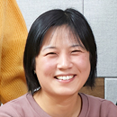
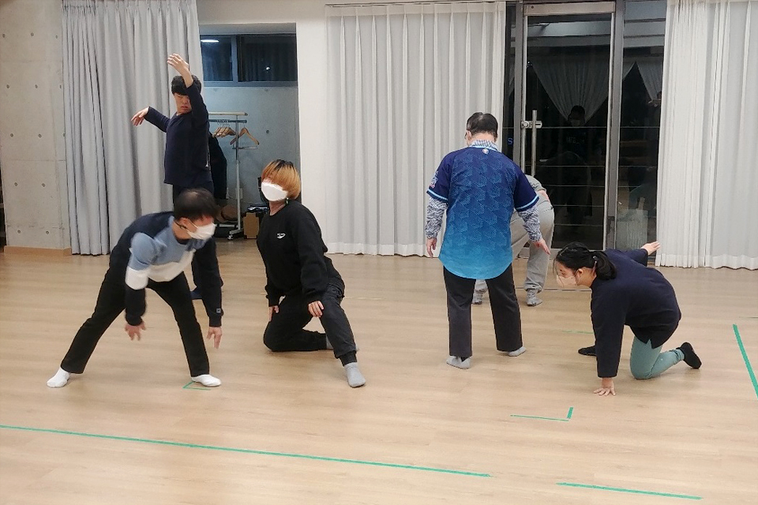
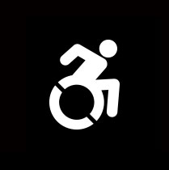

이음리뷰클럽은 공연예술가, 시각예술가, 문화예술 애호가 등 다섯 명이 모여 창작자, 관계자, 관객으로 참여한 공연, 전시, 행사의 감상과 후기를 나누는 모임입니다. 예술의 미학부터 완성도, 접근성 이슈까지, 장애 당사자의 관점에서 자유롭게 이야기 나눕니다.
이음온라인 가이드
이슈
개요
-
일시2023년 1월 31일(화) 오전 10:30
-
장소서울 용산역 회의실(itx 1)
참석자
- 좌장.
- 최선영 유구리최실장, 이음온라인 기획위원
- 패널.
- 송보민 강남장애인복지관 가족문화팀장
양민정 실로암시각장애인복지관 음악점역팀장
이경도 소화누리 팀장장
- (왼쪽부터) 이경도, 최선영, 양민정, 송보민
자립을 꿈꾸는 예술 일상
최선영장애인복지관은 장애인이 일상적으로 많은 시간을 보내는 곳 중 하나이고 장애인 문화예술교육이 가장 많이 일어나는 곳이기도 하다. 장애인이 지역사회 안에서 문화예술 활동을 한다는 것은 현실적으로 중요하다. 일상적으로 스며드는 예술이 장애인에게 어떠한 의미를 지니며, 사회와 어떠한 연결을 만들어 낼까. 단순히 예술교육을 넘어 창의적이고 통합적인 접근을 하는 다양한 모델을 만들어가는 시설‧기관에서 문화예술활동을 담당하고 계신 세 분과 이야기 나눠보고자 한다. 우선 각자 소개를 부탁드린다.
이경도소화누리는 사회복지법인 산하 여성 정신장애인 요양시설이다. 이외에도 발달장애인 시설 3개 소, 직업재활시설과 공동생활가정 각 1개 소를 운영하고 있다. 저는 30명이 거주하는 생활실 팀장을 맡고 있다. 거주자분들이 행복하고 편안하게 살 수 있도록 지원하는 게 주 업무이고, 외부와 연계해 장애인 문화예술활동 지원사업을 맡고 있다. 장애인 당사자들이 참여하는 동료지원과 동료 상담 업무도 하고 있다. 소화누리는 “있는 그대로 가능한 사람 공동체”라는 미션을 가지고 있다. 정신장애 당사자 중심에서 스스로 결정하고 참여할 수 있도록 한다. 대부분의 요양시설이 도심을 벗어나 있거나 깊은 산속에 격리되어 있는데, 우리는 시내에 터를 잡고 있어서 대형마트나 대형서점이 인접해 있다. 거주자들이 지역에서 이런 공간을 수시로 이용하면서 주민들도 우리 기관 거주자분들을 조금은 편하게 받아들이는 것 같다.
대부분의 재활시설이나 사회복지시설, 정신건강복지센터에서는 재활 프로그램을 하고 있는데, 거기에 공예, 미술, 음악 같은 문화예술이 빠지지는 않는다. 공동 거주 생활에서도 벽에 자신이 그린 그림을 붙여놓는 분들도 있고, 장롱에 자기 작품을 차곡차곡 쌓아놓기도 한다. 그런 모습을 보면서 ‘참 재능이 많구나’ 새삼 발견하기도 한다. 이분들이 작업할 공간이 있으면 좋겠다는 생각에서 2018년에 틈새미술관을 개관해 창작과 발표 등 활동 거점을 가꿔가고 있다.
양민정실로암시각장애인복지관은 영유아부터 노년까지 전 연령층의 시각장애인을 지원한다. 본관은 봉천역 4번 출구 앞에 있고, 영유아부터 청소년까지 지원하는 ‘설리번 학습지원센터’를 종로 국립서울맹학교 근처에 운영하고 있다. 양주에 어르신 요양시설이 있고, 제조업 공장이 독산역 인근, 서비스업인 안마와 카페가 봉천, 잠실 등에서 운영되고 있다. 주간보호시설도 있어서, 생애주기별로 필요한 모든 것을 원스톱으로 지원하는 것이 목표다. 시각장애인 당사자가 설립하고 시각장애인 당사자가 기관장을 하면서 시각장애인이 자립하고 독립적인 주체로 살아갈 수 있도록 복지관이 역할을 해야 한다는 생각의 일환으로 시각장애인의 재능을 개발하기 위한 음악 사업을 시작했다. 1999년부터 점자 악보를 제작했고, 제가 입사한 2009년부터는 음악 전공자를 직원으로 뽑기 시작했다. 2012년에는 복지부의 지원을 받아 시각장애인음악센터를 설립했고, 현재 30여 명이 영유아부터 성인, 노년층까지 음악 사업을 하고 있다.
저는 음악점역팀장으로서 음악재활센터 사업을 총괄하고 있다. 어린이를 위한 음악 아카데미, 성인과 노인 프로그램을 운영하고, 필요로 하는 점자악보를 제작해서 학생과 전문 연주자에게 도움을 주고 있다. 점자악보 홈페이지에서 4개 국어로 무료 악보를 제공하고 있고, 약 20개국에서 이용하고 있다. 새롭게 만든 드리미예술단 운영도 담당하고 있는데, 서울형 중증장애인 맞춤형 공공일자리 사업의 일환으로 문화예술 특화형으로 채용한다. 시각장애인과 시각·발달 중복장애가 있는 사람들이 함께 참여하는데, 외부 지원사업을 통해 공연 활동을 하면 공연수당을 지급하는 방식으로 자립 기반을 마련하고 있다. 설리번 학습지원센터의 경우에도 중복장애를 가진 아동 비중이 높다. 초등학생의 경우 33명 중 25명일 정도다. 이밖에도 2011년에 창단한 시각장애인 전문 국악연주자들로 구성된 관현맹인전통예술단이 국내외에서 활발하게 활동하고 있다.
송보민강남장애인복지관은 2009년 3월에 개관했는데, 제가 그해 2월에 입사했다. 설립 초기 막내로 들어왔는데 지금은 팀장이다. 그 사이에 법인이 한번 바뀌었고, 현재는 사회복지법인 대한불교조계종 봉은에서 운영하고 있다. 우리 복지관은 분당선 대모산입구역 바로 앞에 있는데, 이곳으로부터 한 블록 이내에 장애인복지관, 종합복지관, 건강가정지원센터 등 복지 인프라가 모여 있다. 복지관 뒤에는 영구임대아파트 단지가 있다. 이러한 지역적 맥락 속에서 문화예술로 접근하자는 방향을 잡고 장애인복지관 최초로 ‘문화예술특화복지관’을 모토로 정했다. 아무것도 없는 상태에서 시작하다 보니 예술가들과 협업을 많이 했다. 예술가들에게 공간도 대관해주고 함께 논의하며 매니저 역할을 많이 했다. 복지관은 3년에 한 번씩 평가를 받는데, 거기에 맞추다 보면 복지로 중심이 치우치고 예술을 놓게 된다. 초심을 잃지 말자는 의식이 복지관 안에서도 일어나면서 예술가를 육성해보자는 목표를 세우게 되었다. 그때 생긴 게 멘토링 클래스다. 미술, 공연에 재능 있는 이들에게 일대일 수업을 진행했다. 기본적으로 진행하는 장애아동 문화예술 프로그램도 있고 재능을 보이는 발달장애 아동들도 조금씩 눈에 띄어 이들을 꾸준히 지도해보고자 청소년 재능육성 사업도 진행하고 있다.
그런데 이건 사실 스페셜한 1%의 이야기이다. 그렇다면 영구임대아파트 단지 내에 거주하고 있는 지역의 장애인들과는 어떤 활동을 해야 할지 고민하면서 평생교육 프로그램을 진행하게 되었다. 평생교육 프로그램은 굉장히 출석률도 좋고 스스로 똘똘 뭉쳐서 과제를 한다. 평생교육 프로그램에 참여해 하모니카나 기타 수업을 몇 년간 받다 보면 본인들이 스스로 동아리를 만들어 계속 활동하신다. 우리는 그런 활동에 지지자 역할을 해주는 거다. 지역주민들이 축제 같은 행사를 진행할 때면 동아리에서 한 부스를 담당해주기도 한다.
예술로 관계 맺고 소통하기
최선영기관마다 문화예술활동을 통해 추구하는 바가 조금씩 다른 것 같다. 욕구 중심도 있고, 재활이나 자립에 더 초점을 맞추거나, 재능을 육성하는 활동을 하면서 평생교육, 권리 측면의 활동도 하는 것 같다. 기관이 지역사회에서 어떻게 자리 잡는지도 중요하고, 기관마다 공간의 역할을 해석하는 것도 다를 수밖에 없을 것 같다. 어떤 계기로 문화예술활동을 중심에 놓게 되었나?
이경도정신장애를 가진 분들의 특성이 장시간 집중할 수 없어서 단순 노무 특히 청소일에 많이 취업한다. 거주자 중에는 미대를 나온 사람도 있고, 그림을 잘 그리는 사람, 좋아하는 사람도 있다. 이분들이 재능을 살리는 일을 하면 좋겠다고 고민하던 시점에 마침 아모레퍼시픽이 후원하는 ‘취약계층을 위한 자립지원사업’ 공모에 선정되었다. 저희는 ‘여성 정신장애인의 미술적 재능을 활용한 자립기반 형성사업 - 디자인을 Job다’로 제안했고, 우리 요양시설 거주자뿐 아니라 광주 지역 여성 정신장애인으로 대상을 넓혔다. 그렇게 해서 16명을 뽑았고, 제일 먼저 미술 재료를 비치해 놓고 아무 때나 와서 작업할 수 있는 환경을 만들었다. 그다음 해인 2018년에 ‘틈새미술관’을 열고 그분들의 작품을 걸 수 있도록 했다. 창작자들이 작품을 만들면 아트 상품으로 제작하고 판매해 수입을 얻게 하자는 목적으로 사업을 시작한 거다. 도슨트로 참여해 관람객에게 전시 설명을 하고 월급을 받는 식으로 자립을 지원했다. 예술가들이 함께하며 코칭을 해주기도 한다.
저희는 창작자들을 아르브뤼 작가라고 표현하는데, 대부분 전문적으로 그림을 배웠다기보다는 아크릴을 캔버스에 쏟아봤더니 무언가가 되더라는 사람도 있고, 낙서하듯 한 작업에서 패턴을 발견하기도 했다. 최근에는 ‘2022 싱가포르 비엔날레’에 참여해 작품을 전시 중이다. 단순 수치화할 수는 없겠지만, 이러한 활동을 통해 창작자들의 변화가 많이 보였다. 항상 은둔생활만 하다가 외출도 하고, 이제 매일 어딘가로 나가면서 대화도 늘고 단절되었던 이들에게 연락할 용기도 생기고 자존감도 올라갔다. 모임이 끈끈해진 것도 큰 변화다. 자신이 힘들 때마다 찾아올 수 있는 공간이 있고, 수시로 대화를 나누며 서로를 지지해주는 돈독한 관계가 생겼다. 광주에서 2시간 거리에 있는 광양에서 매주 오는 분도 있을 정도다.
양민정시각장애인의 직업은 거의 안마에 국한되어 있다. 우리 기관은 재능을 살려 직업도 늘리고 자립하자는 것이 최우선 목표였다. 장애 수용도 중요한 이유다. 장애를 가진 사람들이 칩거하다가 장애를 수용하고 사회로 나오는 데 음악적으로 다가가는 게 좋은 방법이라고 생각했다. 그나마 편안하게 느끼는 거다. 상담하러 오는 사람 중에도 몇 년 만에 나왔다고 하는 분들이 많고, 이분들에게 음악도 한다고 하면 약간 관심을 보인다. 세 번째 목적은 전문가 양성이다. 제가 설리번 학습지원센터에 있으면서 오해했던 게 있다. 부모 또는 보호자가 비시각장애인인 경우, 시각장애인 아이를 어찌해야 할지를 몰라 생애주기별로 필요한 교육을 안 하는 경우가 많다. 그래서 시각장애 어린이가 단지 필요할 때 적절한 교육을 받지 못했을 뿐인데 발달장애라고 오해하기도 했었다. 이런 아이들은 음악교육을 통해 소근육도 발달하고 점자도 익히고 건강한 성인으로 성장할 수 있다. 특히 대부분 음악프로그램이 1:1로 이루어지다 보니 음악전문강사의 심화교육을 통해 전문 음악인으로 성장할 수 있는 지원이 가능하다. 또한 저희가 다루는 음악은 장르도 다양하고 범위도 넓다. 국악은 아이들부터 어르신까지 연령에 상관없이 관심이 많고 좋아하고, 판소리나 소리북으로 대학에 간 이들도 많다. 클래식의 경우 바이올린으로 해외에서 공부하고 활동하는 분들도 많다. 실용음악도 한다.
송보민우리 기관은 설립 초기부터 문화 향유가 시작되어야 욕구가 나오고, 그 욕구에 맞춰서 교육하다 보면 자연스럽게 재능을 발견하게 된다는 단계적인 변화를 그렸다. 그래서 문화 향유에 초점을 맞추고 있다. 우리도 장애아동 평생교육 프로그램도 운영하고, 피아노 수업, 태권도, 미술, 바이올린, 플루트 등의 전문적인 수업도 하고, 재능 있는 아이들이 단계적으로 성장할 수 있도록 멘토링 클래스 등을 지원하고 있다. 처음 시작할 때는 아이들을 모집하고 발굴하는 것도 어려웠다. 재능 있는 분들이 복지관을 믿고 찾아오기도 쉬운 일은 아니었다. 다행히도 한 해 한 해 활발해지고 있다. 전시할 때도 장애예술가와 비장애예술가가 일대일로 멘토링 클래스를 진행하다 보니 공동작업과 협업도 일어나고, 장애예술가 음악 전시 같은 기획전시도 진행하고 있다. 이런 활동이 연결되면서 소문이 났고, 전국에서 멘토링 사업에 참여하고 싶다고 문을 두드린다. 보통 매년 3월에 작가 공모나 오디션 프로그램을 진행한다. 지역주민과도 미술 활동이나 손뜨개, 생활체육 같은 누구나 가볍게 할 수 있는 문화 동아리도 운영하고 있다. 이러한 다양한 활동으로 비롯된 콘텐츠를 활용한 ‘액티브아트 컴퍼니’ 사업도 진행하고 있다. 이들이 만든 콘텐츠가 들어가 있는 상품을 개발하고 외부에 소개하고 판매하는 사업까지 연결한다.
각자의 꿈을 실현하는 곳, 이웃과 연결되는 곳
최선영문화복지가 공간을 중심으로 일상적으로 일어나고 복지 서비스도 평생학습 차원에서 논의되는 것 같다. 산발적이고 일시적으로 외부 상황에 이끌려 움직이기보다는 중심을 가지고 가는 좋은 토대를 가지고 계신다. 문화예술 활동과 연계해서 참여자들이 이 공간을 어떻게 인식하고 있는지 혹은 어떻게 인식했으면 하는지 궁금하다.
송보민우리 기관은 영구임대아파트 단지 내에 있어서 인근에 사는 분들이 많다. 기관 미션이 장애인 누구나 차별 없는 문화공동체를 형성하자는 것이고, 핵심 키워드가 ‘아트 포 에브리원(Art for Everyone)’이다. 우리가 전문적인 문화예술교육도 하지만, 누구나 복지관에 와서 재미있는 하루를 지내고 갔으면 좋겠다는 속뜻이 있다. 아파트에 사는 한 분을 예로 들면, 아침에 일어나면 복지관에 와서 지하에 있는 헬스장에서 운동을 한다. 운동 후에는 인근에 있는 장애인복지관에 가서 점심식사를 하고, 다시 우리 복지관에 와서 자판기 커피를 뽑아 옆에 있는 놀이터에서 담소를 나눈다. 그 후에 우리 복지관 프로그램에 참여하고 귀가하는 하루의 루틴을 보낸다. 그분들에게 복지관 공간이 주는 의미는 ‘하루의 일상’이다. 이 안에서 재미와 즐거움을 찾는다. 공간이 협소하지만, 곳곳에 전시물이나 아트상품을 꾸밀 수 있게 경사로에 조명도 설치했다. 2층에는 아이들이 만든 아기자기한 작품들을 상시로 전시할 수 있는 액티브아트 갤러리 공간이 있다. 그래서 복지관을 이용하면서 자연스럽게 전시를 접할 수 있다. 또 매월 한 번씩 무료 공연도 열고 있다. 복지관에 가면 재미있는 볼거리와 놀거리가 있는 곳이라고 인식할 수 있도록 노력하고 있다.
최선영그 한 분의 삶이 많은 것을 얘기해준다. 예술과 일상이 연결되는 지점을 잘 보여주는 것 같다.
이경도지난 3년간 코로나19로 출입이 통제되어 외부인이 오기 쉽지 않았지만, 미술 활동에 꾸준히 참석하셨던 분들은 이 공간 자체가 재미있고 편안하고 위로가 된다고 말씀하신다. 멀리서 아침 일찍 일어나 준비하고 2시간을 걸려 이곳에 오는 분들도 있다. 이 공간이 자신의 일상에서 편안함을 느낄 수 있는 곳이기에 가능하지 않았을까. 소화누리에 거주하는 분들도 틈새미술관은 멋진 작가들이 활동하고 멋진 작품을 볼 수 있는 공간이라고 하신다. 우리 시설 안에는 휴게공간이 없어서 틈새미술관에 커피머신도 들여놓고 휴식처로 이용하게 하고 있다. 지금 활동하는 분들이 대부분 2017년부터 꾸준히 참여하면서 관계를 잘 맺어오다 보니 자신들에게 편안한 공간이 되는 것 같다.
양민정우리는 공간이 여러 곳에 분리되어 있어서 공간마다 의미가 다르다. 아이들이 있는 곳은 ‘내가 하고 싶은 것을 하고 꿈을 이루는 공간’이다. 아이들이 1년 동안 열심히 배워 음악회도 하고 친구와 지인을 초청해 음악회를 연다는 꿈의 실현이 있다. 봉천동에도 연습실이 부족해서 계속 증축하고 있다. 공간이 넓어지면 음악 관련 프로그램도 더 많이 생겨났다. 코로나 이전에는 수업이 없는 시간에는 연습도 하고 음악 하는 사람들끼리 모여 교류하는 등 여가생활도 즐기고 사람들과 관계 맺는 곳이 되어주었다. 2021년에는 효명아트홀을 개관했다. 약 90명 정도 들어갈 수 있는 배리어프리 공연장으로 만들어서 장애인이라면 누구나 신청해서 사용할 수 있다. 2021년에 드리미예술단 첫 정기연주회를 이곳에서 열었는데, 나만을 위한 공연장이 생겼다고 정말 좋아했다. 각자 가지고 있는 자기만의 꿈을 실현하는 장소인 것 같다.
최선영지역주민이나 비장애인에게는 어떻게 인식되고 있고, 인식되길 바라는지 궁금하다.
송보민우리 기관이 서울시 강남구에 위치해서 주변이 계속 개발되고 새로 아파트가 들어선다. 근처에 밀알특수학교도 있어서 학부모들이 이사 온다. 가끔 비장애인도 이용할 수 있냐는 문의도 들어오지만 아직은 오픈하기 어려운 상황이다. 그래서 작년에 처음으로 어린이날 행사를 비장애 아동을 대상으로 진행해봤다. 복지관은 공간이 협소해서 옆에 있는 놀이터 공원을 활용하여 놀이공원으로 꾸미고 딱지치기부터 술래잡기, 얼음땡 같은 놀이도 하고, 마라카스 악기 만들기를 해서 기념품으로 가져갈 수 있게 했다. 그날 행사에 참여한 아이들에게 장애인복지관에 대해 어떻게 인식하고 있는지 물어볼까 엄청 고민했었다. 결론은 그냥 가보자는 거였다. 아직 장애인복지관에 대한 인식이 서 있지 않은 아이들에게 이야기하는 게 효과적이지 않을 것 같았다. 그냥 이 지역사회에 이런 공간이 있다는 정도의 메시지를 주자고 생각했는데, “알아요”라고 대답하더라. 우리가 장애 아동과 외부에 나가 사회성 프로그램을 진행하다 보면 가끔 의아하게 쳐다보는 비장애 아동들이 있다. 그러면 제가 다가가서 “선생님은 복지관에서 일하는 사회복지사인데 저 친구가 발달장애가 있어요”라고 말하면 이해한다. 10년 전만 해도 굉장히 움츠러들면서 사업을 했는데, 사람들의 장애인식이 예전과는 확실히 달라진 것 같다.
양민정우리 복지관은 봉천역 4번 출구 바로 앞에 있어서 접근성이 좋고, 많은 사람이 그 앞을 오가는데도 잘 모른다. 1층에 시각장애 바리스타들이 일하는 카페와 시각장애 안마사가 근무하는 안마센터가 있다. 안마센터라고 하면 많이들 알지만, 실로암시각장애인복지관은 잘 모른다. 시각장애인에게 복지관 방향을 알려주기 위해 봉천역 4번 출구 앞에 항상 뻐꾸기 소리를 틀어놓는데, 어떤 사람들은 뻐꾸기 소리가 나는 곳으로 기억하기도 한다. 코로나 전까지는 매년 바자회를 했고 1년에 한두 번 동네를 돌며 홍보하는 데도 인식은 잘 안된다. 2019년에 처음으로 시각장애 연주자와 비장애 연주자들이 연주를 하며 거리 행진을 한 적이 있는데, 효과가 좋았다. 2022년 말에 바자회를 다시 열었을 때는 일부러 유치원 아이들을 초대하여 장애인식 체험도 하고 공연도 봤다. 이날 지역주민도 많이 찾아왔다. 오랜만에 열리는 거라 좀 더 유심히 보셨던 것 같다. 지나가던 학생들도 걸음을 멈추고 공연을 즐기며 사진을 찍기도 했다. 이런 행사도 열고 지역 행사에도 참여하고 복지관 앞에 무인도서관도 운영하며 알리려고 노력하지만 쉽지 않다. 장애인 관련한 이슈가 터질 때만 반짝 관심을 두는 것이 아쉽다.
이경도우리 작가 중 한 분이 자신의 정신장애 발병에 관한 그림을 시리즈처럼 만들었다. 어떻게 정신장애가 발병했고, 정신병원에 입원해서 자조모임을 하고 치료받았던 이야기, 그리고 재발하고 완치되었던 이야기. 재발했을 때는 머리에서 나무처럼 무언가가 자라고, 완치되었을 때는 표정이 좋았던, 그런 마음을 투영해서 작품화했다. 전시회에서 이 그림을 본 지역주민이 쉽게 다가왔던 기억이 있다. 코로나 이전에는 지역주민이 틈새미술관에 자주 왔는데, 작가들의 아트상품을 보고 신기해하고 정신장애 아티스트들이 만든 거라는 게 믿기지 않는다고 놀라워했다. 장애인식개선 일환으로 홍보도 되겠지만, 그것보다는 예술 자체가 지역주민과 연결해준다는 생각이 들었다.
적극적인 연결과 연대를 꿈꾸며
최선영복지관이 장애인의 일상과 연결되는 지점에서 오랫동안 문화예술활동으로 다양한 시도를 하고 계시는데, 그동안 느꼈던 아쉬움이나 필요한 것이 있을 것 같다.
송보민사실 예산과 공간이 제일 중요하다. 처음에 문화예술 프로그램을 시작할 때는 활발하게 활동하는 아티스트를 초빙하고, 활동할 공간이 없는 아티스트에게 공간을 제공해줄 수도 있었다. 그러다가 기관에서 아티스트를 육성해보자고 했는데 공간이 부족했다. 그래서 과감하게 창고를 개보수해서 창작소라는 조그만 공간을 마련했다. 지금은 미술 작가들이 활용하고 있고, 도예 프로그램도 활발히 하고 있다. 자원이 쌓이면서 재미있고 다양한 접근을 많이 시도하지만 예산 문제로 꾸준히 지속하지 못하는 것이 큰 어려움이고 아쉽다. 그리고 중요한 것이 홍보다. 장애인 관련 이야기가 매스컴에서 한번 뜨면 굉장히 이슈가 되지만 또 금방 사그라든다. 드라마에 정은혜 작가가 출연해 관심이 집중되고 대통령 집무실에 우리 기관 작가의 작품이 걸려 기사화되기도 했지만, 거기서 끝이었다. 예술가의 길은 끝이 없는데 예산, 공간, 지속적인 관심, 홍보 등이 다 맞아떨어지지 않으면 힘든 부분이 있다. 또 하나는, 일대일 멘토링 사업에 비장애 작가가 참여할 때 적합한 사람을 찾기도 어렵고 상황과 조건에 맞게 매칭하기도 쉽지 않다. 멘토링 사업을 잘하고 있는지 자문받고 싶어도 어디에 물어봐야 할지도 고민이다. 멘토링 참여자들이 계속 피드백을 받고 성장할 수 있게 지원하고 싶은데 어느 정도 가다 보면 벽이 있는 것 같다. 그런 면에서 장애 아티스트가 문화예술의 한 영역이라는 인식으로 많이 나아가면 좋겠다.
최선영지속적인 관심이 가장 원하는 지점인 것 같다. 관심이 있어야 예산도 편성되고 지역사회에서 함께 살아간다고 응원하면서 전시에도 찾아올 수 있을 것 같다. 그런 바탕이 없이 복지시스템만 고도화될 경우 외로운 개별 작업을 이어갈 수밖에 없다.
이경도처음에는 문화예술 쪽에 지인이 전혀 없었다. 자문받고 싶고 정말 궁금한 게 있어도 물어볼 곳이 없어서 너무 답답했다. 아트상품을 제작할 때도 협업할 수 있는 아티스트도 찾아보고 잘 만들고 싶었지만, 인터넷으로 검색해서 업체를 찾아 진행할 수밖에 없었다. 요즘에는 우리 작가들을 잘 알리고 싶은 마음이 크다. 어떤 홍보 방법이 있을까, TV에 나가야 하나, 이런저런 생각을 한다. 우리 작가 중 한 분은 다양한 재료를 활용한 모자이크 작업으로 독특한 작품을 만드는데, 서울에서 전시하고 해외에서 전시해도 지역 일간지에서만 다뤄준다.
양민정저도 두 분 말씀에 깊이 공감한다. 우리는 직원들이 음악 전문가이기 때문에 음악 분야 전문가들과 소통하는 데는 좀 더 수월한 것 같다. 그런데 문제는 예산이다. 외부 전문가분들이 적은 예산으로도 언제든 도와주겠다고 하지만, 한두 번 부탁드리고 나면 죄송해서 계속 연락할 수가 없다. 장애가 있는 사람들에게는 더 많은 시간과 회차가 필요하고, 전문가도 장애에 대해 이해하고 방법을 찾아갈 시간이 필요한데, 그런 것을 조정할 여지가 없는 거다. 또 복지 분야의 강사비나 자문회의비 등 세부 요건이 문화예술 쪽과 맞지 않는다. 현실적으로 반영이 안 되니 시도해보기가 더 어렵다. 그렇게 되면 예술적 성장은 거기서 멈추게 되는데, 사실 그냥 멈추는 게 아니라 퇴화하는 거다. 홍보와도 연결되고 예산도 문제이지만, 그런 인연들을 끌고 가기에는 구조적 어려움이 많다.
최선영프로그램 중심의 사업비로 예산이 지원되다 보니 일상적으로 관계를 맺고 있는 파트너나 전문성을 갖춘 분들과 지속해서 활동하는 데 어려움이 클 것 같다. 그래도 꾸준히 새로운 것을 시도하고 계시는데, 올해 또는 중장기적으로 어떤 것을 해보고 싶은가.
송보민재능있는 아동들을 위한 일대일 교육을 진행하고 있는데, 이제는 하모니를 만들어보면 좋겠다. 이제 막 7명이 조그만 앙상블로 합을 맞추기 시작했다. 전문 지휘자가 있는 것도 아니어서 쉽지 않겠지만, 올해 장애인의날 행사나 내년 복지관 15주년 때 무대에 설 수 있도록 해보려 한다. 또 하나는 작가들이 직접 대면하고 소통하는 토크쇼 방식으로 장애인식 개선사업을 꾸려보고 싶다. 최근에 근처 여자고등학교에서 ‘픽셀 킴’으로 활동하는 김현우 작가가 인터뷰 형식으로 작품에 대해 소개하고 작업 과정을 이야기하는 자리가 있었다. 학생들이 열심히 경청하며 질문을 하고, 마음에 드는 작품에 관한 이야기도 했다. 작가도 좋아하며 답변을 해줬던 기억이 있다.
이경도우리도 작가들의 작품을 많이 보여드리고 싶어서 유관기관이나 공공기관에서 전시하기도 했었다. 올해는 인지도 높은 지역 미술관에서 전시할 수 있도록 광주시나 광주문화재단 등에 문을 두드려보려 한다. 틈새미술관에 다녔던 분들만 계속 나오고 있는데, 장기적으로는 ‘이곳에 가면 놀거리가 있고 볼거리가 있네, 가고 싶다’ 하는 장소가 됐으면 좋겠다. 2018년부터 매년 정신장애인을 대상으로 틈새미술관 공모전을 진행했는데, 2021년에는 예산이 없어서 쉬었다. 올해는 관심과 참여도 높이고 과정도 즐길 수 있는 방식으로 준비하고 싶다. 그리고 다른 복지관도 가보고 좀 더 다양하게 네트워크를 만들고 싶다. 사실 사회복지기관에는 업무가 많다. 그래도 이렇게 만나 이야기 나눌 수 있어서 좋았다.
송보민이런 연결고리와 네트워크가 중요하기도 하고 쉽지 않은 부분이기도 하다. 복지관에서 다른 기관과 뭔가를 함께하기가 어렵다. 오히려 문화예술단체와 작업하는 건 어렵지 않다. 그래서 많은 문화예술단체가 먼저 다가와 주면 좋겠다는 이야기를 꼭 하고 싶다.
양민정작년에 드리미예술단 단원 중 한 분이 혼자 가사를 써서 노래를 흥얼거리는데 너무 좋았다. 40대이고 탈시설 하면서 우리 복지관에 오셨는데, 이곳에 오지 않으면 노모와 집에 있어야 하니 답답한 상황에서 복지관이 굉장한 탈출구였다고 한다. 음악을 전공한 근로지원인들이 그분의 음악을 함께 완성해보겠다고 한다. 내년에는 시각장애·발달장애 중복장애를 가진 단원들과 자작곡을 만들어 대회도 나가보고 싶다. 또 시각장애연주자들과 비장애인이 협연하는 기회를 온·오프라인으로 마련하고 싶고, 특히 코로나19 기간 동안 활발해진 온라인 공연활동을 해외로 확장하고 싶다.
최선영웹진 [이음]은 다양한 예술적 실천과 예술인의 시도를 계속 발굴하고 있다. 같이 협업할 파트너를 구체적으로 상상해보실 수도 있을 것 같다. 생생한 경험과 고민을 나눠주셔서 감사하다.
송보민
강남장애인복지관에서 문화예술지원팀장으로 일했고, 올해부터 가족문화팀장으로 문화동아리, 예술교육, 연계 활동을 총괄하고 있다.
* 강남장애인복지관은 2009년 장애인의 능동적인 참여 확대와 활동을 지원하고자 국내 최초의 장애인문화예술특화복지관으로 개관하여 ‘장애인 문화예술의 시작’을 캐치프레이즈를 내걸고 ‘액티브아트’라는 이름으로 다양한 문화예술 프로그램을 운영하고 있다. 문화예술특화기획, 문화예술특화교육, 액티브아트컴퍼니을 통해 장애인 문화예술 콘텐츠를 개발하고 아티스트와 지역주민이 소통하는 공간을 만들고자 한다.
activeart01@daum.net
▸ 강남장애인복지관 홈페이지(링크)
양민정
음악재활부 음악점역팀 팀장이고, 점자악보 제작사업, 음악재활아카데미, 나눔연주 사업, 드리미예술단을 운영하고 있다. 전 연령대의 시각장애인에게 음악재활서비스를 제공하여 장애 수용을 넘어 한 사회의 구성원으로 당당하게 살아갈 수 있도록 돕고 있다.
* 실로암시각장애인복지관은 당사자 중심, 지역사회와 함께하며 도전하고 변화하는 복지관을 목표로 1999년 개관했다. 장애인식개선과 직업개발뿐만 아니라 평생교육과 예술교육에도 힘쓰고 있다. 실로암시각장애인음악재활센터를 운영하며 점자악보 제작 및 보급, 음악재활 아카데미, 나눔연주사업을 한다. 또한 점자악보 홈페이지를 운영하며 음악점역팀에서 만든 음악 콘텐츠를 4개 국어로 무료 제공하고 있다. 2011년에는 관현맹인전통예술단을 창단해 활발하게 활동하고 있다.
musicbraille@gmail.com
▸ 실로암시각장애인복지관 홈페이지(링크)
▸ 점자악보 홈페이지(링크)
이경도
정신건강 사회복지사이고, 문화예술사업을 담당하며 아르브뤼 작가들의 활동을 돕고 있다.
* 소화누리는 여성정신장애인 요양시설이다. 여성정신장애인들이 자존감을 회복하고 미술적 재능을 활용해 자립할 수 있도록 미술교육을 운영해왔다. 2017년에 공모전 ‘틈새누리’를 통해 미술에 재능을 보이는 여성 정신·발달장애인을 발굴하고 지원했다. 2018년 틈새미술관을 개관하고 ‘틈새미술 공모전’으로 이름을 바꾸어 매년 선정 작가를 지원하고, 아트상품을 제작 판매하며 자립을 돕고 있다.
sohwanuri@hanmail.net
▸ 소화누리 홈페이지(링크)
▸ 틈새미술관 홈페이지(링크)

최선영
유구리최실장. 2007년 장애인 문화예술교육 활동을 시작으로 최근까지 개별성 중심의 활동을 기획 및 연구하고 있다. 2018년 한국장애인문화예술원 ‘장애예술인 창작 활성화 프로그램 개발’, 2021년 한국문화예술교육진흥원 ‘장애인 비대면 문화예술교육 콘텐츠 개발 사업’, 2022년 한국장애인문화예술원 ‘발달장애인 특성화 문화예술교육 프로그램 연구개발’ 등에 참여했다.
voslss@hanmail.net
정리. 최순화 프로젝트 궁리 제작PD suna.choe@gmail.com
사진. 이재범 POV스튜디오 andy45a@naver.com
2023년 3월 (40호)
이슈
일상 가까이, 흥미로운 예술을 만나고 소소한 행복을 나누는 공간이 있다. 춤추고 그림 그리고 연극을 하면서 몸과 마음이 즐거운 곳, 함께하는 사람들을 만나서 더 즐거운 곳. 그곳에서 저마다의 일상과 예술 활동을 펼치고 있는 이들의 이야기를 서면 인터뷰로 담았다.
춤추는 은평재활원에서
춤추는 박상현입니다.
1. 자기소개
저는 서울시 은평구에 위치한 은평재활원에서 생활하고 있는 박상현이고 나이는 스무살입니다. 제가 활동하고 있는 춤추는 은평재활원은 춤을 좋아하고 사랑하는 발달장애인들이 단원으로 활동하고 있고, 홍혜전 선생님의 지도로 즉흥적인 음악에 다양한 퍼포먼스와 멋진 춤을 공연하는 단체예요. 저는 춤을 잘 춘다는 말을 자주 들었어요. 주변의 권유로 중학교 3학년이던 2018년부터 단원으로 활동했습니다.
2. 춤추는 은평재활원과의 만남
제가 은평재활원에 살아서 춤추는 은평재활원을 이미 알고 있었어요. 처음에는 크게 관심을 두지 않았는데, 재활원 직원에게 단체 소개와 단원 활동에 대한 설명을 듣고 관심 가지게 되었어요. 춤추는 은평재활원에서는 크고 작은 공연에 서기 위해 춤을 배우고 연습하고 있으며, 공연 무대에서 솔로나 단체 춤을 선보이고 있습니다.
3. 활동하는 날의 일과
공연 연습은 북한산성 입구 인근의 북한산아트센터에서 했어요. 금, 토, 일 이렇게 주 3회 참여했어요. 주말에는 은하빌(은평재활원)에 모여서 승합차로 이동하였고 30분 정도 걸렸습니다. 평일에는 직장에서 퇴근한 후에 버스를 타고 1시간 이동했어요. 연습은 주로 오후 6시부터 9시까지 3시간 정도 했고, 연습 후에는 재활원 승합차로 이동 지원을 받아 돌아왔습니다.
4. 기억에 남는 일
2019년에 베트남으로 공연 갔던 일이 기억에 남아요. 첫 해외여행이었고 이국적인 음식들이 맛있어서 좋았어요. 그리고 해외에 나가서도 사람들에게 춤 공연을 보여줄 수 있다는 것에 즐거움과 행복을 느낄 수 있는 시간이었어요.
5. 춤추는 은평재활원 외 다른 활동
작년에는 고양시 벽제동에 있는 위캔센터에 근무했습니다. 쿠키를 생산하고 판매하는 곳인데 주로 계량이나 포장, 청소 등을 했어요. 2022년으로 근무 계약이 끝나서, 취업 연계를 위해 복지관 상담을 마쳤고, 현재는 준비과정으로 오전 10시부터 12시까지 작업프로그램에 참여하고 있어요. 보석십자수를 하는데, 작은 큐빅 비즈를 하나씩 찍어서 붙이는 활동이 재미있기도 하고 집중력도 생기는 것 같아요.
6. 나에게 춤추는 은평재활원은
활동을 하면서 공연 준비나 연습이 힘들고 지칠 때도 많았지만, 무대에 서서 공연을 끝내고 나면 홀가분하고 관객들에게 환호와 갈채를 받으면 뿌듯해요. 음악에 맞춰 저의 생각과 느낌을 몸으로 표현할 수 있다는 것에 때로는 환희와 즐거움을 느껴요.
7. 올해 꼭 해보고 싶은 일
춤추는 은평재활원 활동을 하면서 해보고 싶은 것은 미국이나 태국, 일본 등 해외에서 멋진 공연을 선보이는 거예요. 해외 무대에 서서 외국 사람들에게도 저만의 멋진 춤을 보여주고 싶어요. 여행도 하면서 그 나라 문화도 구경하고 맛있는 음식도 실컷 먹고 세상의 다양한 경험을 해보는 것이 저의 바람이에요.
* 인터뷰 도움 : 김명화 은평재활원 사회복지사
- 
연습실에서 공연 연습을 하는 모습
-
제7회 대한민국장애인국제무용제(2022) 공연무대
발달장애청년허브 사부작-모던양파에서
그림 그리는 냐옹이 강우석입니다.
1. 자기소개
안녕하세요? 저는 냐옹이입니다. 모던양파에서 동물에 대한 연구와 관찰을 많이 하고 동물 그림을 그립니다. 활동하는 공간은 사부작인데, 사부작은 장애인들이 많이 활동하는 곳입니다. 저는 모던양파 말고도 훌라 모임도 하고 옹호가게 프로젝트에도 참여했습니다. 키다리아저씨 빵집에서 케이크를 찾아서 근처 단체에 배달도 했어요. 매일 사부작에 옵니다.
2. 모던양파와의 만남
2021년 6월에 알게 됐어요. 성당에서 민준이 이모가 소개해주셨어요. 그래서 사부작에 전화해서 찾아왔어요. 모던양파는 지원이, 마카롱, 혜정이 누나, 이렇게 넷이서 금요일마다 모여서 그림을 그려요. 지원이는 크로키를 하고, 저는 동물을 그려요. 마카롱은 만화를 그리고, 혜정이 누나는 낙서 그림을 그려요. 펜으로 선을 그어서 작품을 만들어요. 함께 전시도 했어요. 마을활력소 작은나무에서도 하고 성산복지관에서도 했어요. 전시장에서 사람들한테 그림도 그려주고 사인도 했어요.
3. 활동하는 날의 일과
거의 매일 와요. 서강대학교에서 일 끝나고 출발하면 30분에서 1시간 정도 걸려요. 이곳에 오면 3시간, 4시간 정도 있는 것 같아요. 모던양파에서 그림 그리고, 선샤인아놀드훌라 모임도 하고, 요즘엔 캠씨 영상을 자주 봐요. (도움말 : 캠씨는 작년에 사부작 청년들과 뉴미디어 아티스트팀 노드 트리가 협업해 진행한 모임이다. <오리마을 대모험>이라는 미디어 오페라 공연을 했는데, 냐옹이는 요즘 캠씨 모임과 공연 영상을 보고 또 보고 있다.)
4. 모던양파 외 다른 활동
선샤인아놀드훌라라는 모임은 작년부터 했는데, 목요일마다 공간릴라에서 모여요. 아난도, 가지, 소피아, 꽃다지, 혜정이 누나, 준하, 피아노, 연두랑 같이 공연도 했어요. 북서울미술관, 서교스퀘어에서요. 캠씨 모임도 했어요. 캠씨는 바롬, 은성, 들판, 마카롱이랑 나랑 했어요. 사진을 찍고 이야기를 만들어서 <오리마을 대모험> 공연을 했어요.
5. 기억에 남는 일
같이한다는 게 좋아요. 그림을 따로 그리는데, 같이 그리기도 했어요. 새해 인사하는 거요. 사부작에서 포스터에 쓴다고 활동비도 받았어요. 훌라에서는 시작하는 노래 ‘에호마이’가 좋아요. 캠씨에서는 이야기 만드는 게 재미있었어요. 공연이 멋있어서 외장하드에 담아서 사부작에서 보고 있어요. 어려웠던 점은… 마카롱이랑 의견이 안 맞아서 다툰 적이 있는데, 앞으로는 서로 의견을 잘 나누기로 했어요. 또 모던양파 모임을 하던 마을활력소 공유라운지가 없어져요. 모던양파를 어디서 해야 할지 아직 몰라요. (도움말 : 사부작은 내부 공간뿐 아니라 마을 곳곳에서 모임과 활동을 하도록 기획한다. 모던양파 모임은 매주 마을활력소 공유라운지에서 해왔는데, 서울시가 올해 문을 닫기로 하면서 새로운 공간을 알아보고 있다.)
6. 나에게 모던양파는
그림 그리기 딱 좋고 아는 사람들이 있는 곳이에요. 단골 사람도 만나고요. 연두, 소피아, 꽃다지, 지원이, 마카롱, 석류, 혜정이 누나, 준하가 단골 사람이에요. 단점은요, 사부작이 없으면 단골 사람도 못 만나고 그림도 못 그려요. 혼자 그릴 수는 있지만, 같이 그리는 게 더 재미있다고 생각합니다. 사부작에 와서 활발해졌어요. 그전에는 엄청 게으르고 혼자서만 다녔는데, 이제 사람들을 많이 만나요.
7. 올해 꼭 해보고 싶은 일
모던양파랑 선샤인아놀드훌라는 계속할 거고요. 캠씨도 이어서 해보고 싶어요. 친구들하고 계속 만나고 싶어요. 그리고 인터뷰요! 호성 씨가 ‘새구경’을 한 것처럼 서울대공원 동물원에서 동물 구경하면서 인터뷰를 하면 좋겠어요. (도움말 : ‘새구경’은 발달장애인들의 말을 시로, 시를 노래로 만드는 사부작뮤직 작업 중 하나다. 호성 씨가 쓴 글에 곡을 붙이고, 길동무와 함께 새 구경을 다니며 촬영하고 인터뷰도 해서 뮤직비디오를 만들었다.)
* 인터뷰 도움 : 이남실 발달장애청년허브 사부작 활동가
-
모던양파 모임에서 함께 그림 그리는 모습
-
마을활력소 작은나무에서 열었던 전시
소극장 함세상-연극반 레인보우에서
연극 하는 양철우입니다.
1. 자기소개
안녕하세요. 저는 장애인지역공동체(이하 장지공)에 다니고 있는 양철우입니다. 소극장 함세상에서 연극수업에 참여했고, 연극반 레인보우 활동은 2020년부터 2022년까지 3년 동안 했습니다. 함세상 말고도 장애인 지역공동체 프로그램으로 제과제빵, 방송댄스, 자조모임을 하고 있어요.
2. 연극반 레인보우와의 만남
장지공에서 레인보우가 했던 연극 공연영상을 보고 처음 알게 되었어요. 연습하는 날에는, 2시에 도착해서 쉬다가, 몸풀기와 긴소리-짧은소리 연습을 하고 나서 연극연습을 했습니다. 시간이 없을 때는 연극연습을 먼저 하고 장면 짜기를 했습니다. 간식도 먹습니다. 소리 연습은 저랑 동료들이랑 돌아가면서 진행하고, 대본 짜기와 장면 만들기 같은 과정은 같이 합니다. 공연이 있을 때는 리허설을 했습니다.
3. 활동하는 날의 일과
소극장 함세상에는 일주일에 한 번씩 오고, 오후 2시부터 4시까지 연극연습을 합니다. 집에서 아침 8시 20분에 나와서 지하철 타고 북부도서관으로 출근하는데, 9시 15분 정도에 도착해서 11시까지 청소를 합니다. 11시 반에 장지공에 와서 12시 5분까지 쉬다가 점심을 먹습니다. 점심 먹고 쉬다가 지하철 타고 소극장 함세상에 와서 2시부터 연극연습을 합니다. 4시에 연습이 끝나고 집에 오면 5시가 됩니다.
4. 기억에 남는 일
레인보우에서 동료들이랑 연극을 하면서 많이 웃었습니다. 공연에서 이장이 안내방송을 할 때, 개소리를 내서 너무 웃었습니다. 대사를 못 외우는 사람들이 있으면 동료들이랑 같이 협동해서 도와주죠. 제가 조연출이라서 연출이 없을 때는 연극을 만드는 것이 좋았습니다. 즐거웠던 일은, 공연 때 마지막 결혼식 장면에서 주례선생님 말씀 후에 동료들이랑 막춤 췄던 것이요. 청소하는 장면에서 ○○씨가 대사를 자꾸 마음대로 해서 리허설 때 좀 도와줬더니 대사를 다 외워서 너무 기분이 좋았습니다. 기억에 남는 일은, 공연 첫 장면에서 제가 왔다 갔다 헤매니까 동료들이 도와줬어요. 횟집 사장 역의 ○○씨가 리허설에서는 호흡이 너무 빨라서 아직 음악이 끝나기도 전에 무대에 등장하는 실수를 했는데, 공연에서는 음악을 다 듣고 나서 등장할 수 있었어요. 어려운 점은 대사 외우기예요. 처음에는 대사가 안 외워졌어요. 그래도 동료들이랑 직무지도원 선생님, 박연희 선생님이랑 몇 번 해보니까 대사가 입에 붙었던 것 같아요. 연극제 마지막 무대를 끝내고 나서, 이제 레인보우 동료들을 못 볼 수도 있으니까 그게 너무 아쉬웠어요.
5. 나에게 연극반 레인보우는
연극 짤 때 선생님께 많이 배웠고 그게 너무너무 의미가 남습니다. 주변 사람들이 조연출 하느라 고생했다고 얘기해줬고, 연출이 얼마나 힘든지 알게 되었습니다. 달라진 점은 동료들의 이야기를 잘 경청하는 것입니다.
6. 올해 꼭 해보고 싶은 일
올해는 연극반에서 연출을 하고 싶습니다. 또 노래를 배워서 장지공 동료들 앞에서 가요를 부르고 싶습니다. ‘모두페스티벌’ MC도 되고 싶습니다.
* 인터뷰 도움 : 박연희 소극장 함세상 대표
-
소극장 함세상에서 공연 연습하는 모습
-
연극 <바다와 인어이야기> 공연 무대

탐라는 하모니 Harmony
신상화 | 2022.12.14. ~ 12.30. | 갤러리 감저
제주 탐라장애인종합복지관을 이용하는 장애인 창작자 14명이 제주의 자연과 연결된 일상 및 추억을 23개의 이야기에 담아 자신만의 방식으로 그려냈다. 2022년 3월부터 약 10개월간 신상화 예술강사가 진행한 ‘성인 장애인 미술 교실’에서 창작한 150여 점의 그림을 모은 특별기획전이다.
박상현
은평재활원 경남자립홈에서 생활하며 자립을 준비하고 있는 꿈 많은 청년. 평소에 음악을 즐겨 들으며 춤을 출 때 표현력이 좋다. 솔로 및 단체 무대를 통해 춤의 언어로 소통하며 많은 관객에게 울림과 감동을 선사한, 춤추는 은평재활원에서 단연 돋보이는 단원이다.
* 춤추는 은평재활원
은평재활원은 2013년부터 춤을 통해 자존감을 고취시키며 즐거움을 나누고 있으며, 2015년 서울댄스프로젝트 춤바람 커뮤니티 참여를 계기로 2016년 홍댄스컴퍼니와 함께 장애인전문무용단체 ‘춤추는 은평재활원’을 창단했다. 끼와 재능으로 똘똘 뭉친 춤을 사랑하는 발달장애인들이 단원으로 활동하며, 춤을 주제로 다양한 공연을 하고 있다.
▸ 홈페이지(링크)
강우석
별명 냐옹이. 동물과 만화에 관심이 많은 26세 청년예술가. 서울을 좋아해서 고등학교 졸업 후 순천에서 서울로 와 혼자 자립해 지내고 있다. 오전에 서강대학교에서 일하고 오후에는 사부작에서 활동한다. 그림 모임 모던양파와 훌라 모임 선샤인아놀드훌라 멤버로 활약하고 있고, 다양한 마을활동에 참여 중이다.
musume8401@naver.com
* 발달장애청년허브 사부작 사회적협동조합
주민들이 모여 발달장애인의 마을살이를 지원하고자 2017년 활동을 시작했다. 발달장애 청년과 마을 사람들을 연결해 모임을 만들거나 함께 활동하는 ‘길동무 연결’과 옹호가게 프로젝트, 사부작뮤직, 발달장애와 마을포럼 등 지역 환경을 만드는 ‘무경계 세상 만들기’에 주력한다. 마을마다 발달장애청년허브를 만드는 ‘1동 1사부작’을 꿈꾸며 활동하고 있다.
▸ 홈페이지(링크)
▸ 유튜브 채널(링크)
양철우
2020년부터 (사)장애인지역공동체에서 발달장애인 자조모임 활동을 하고 있다. 연극반 레인보우에서 활동하며 2021년 공연 <무지개>에는 배우로, 2022년 <바다와 인어이야기>에서는 배우와 조연출로 참여했다.
us00151@daum.net
* 극단 함께사는세상 (소극장 함세상)
대구 지역을 기반으로 활동하는 극단 함께사는세상은 2015년 누구나 공연을 펼칠 수 있는 문턱 낮은 극장을 지향하는 소극장 함세상을 개관했다. 극단 함세상은 이곳을 거점으로 여러 장애인 단체와 교류하고 매년 장애인을 위한 연극교실을 열고 있다. 2015년 시작한 ‘함께사는 장애인 연극제’를 2021년부터 ‘모두페스티벌’로 전환해 모두의 접근성을 높이는 예술축제를 만들고 있다.
▸ 홈페이지(링크)
▸ 유튜브 채널(링크)
정리. 최용휘 프로젝트 궁리 에디터 lotush0317@gmail.com
사진 제공. 정수진(춤추는 은평재활원), 이남실(발달장애청년허브 사부작), 박연희(소극장 함세상)
2023년 3월 (40호)
이슈
새해를 맞아 예술 활동을 시작한 사람들의 다양한 시작점과 까끌까끌한 분투기를 들어본다. 불확실하고 불투명한 예술가의 정체성을 오가며 두려운 만큼 설렘을 안고 미지의 가능성을 향해 길을 찾아 나서는 청년 예술가들의 새해에 부치는 기대와 도전을 담아본다.
왼쪽부터 고나영, 백승호, 진리
활동가와 예술가의 경계를 넘나들며
고나영 배우
1. 처음으로 예술가라고 느낀 때 장애여성운동 활동가로서 발표나 발언할 때가 많은데, 어떤 모습으로 발표할지도 생각하지만 어떤 말을 할지를 더 중요하게 고민합니다. 이때 ‘예술가도 내가 보여주고 싶은 것을 고민하지 않을까? 활동가와 예술가가 닮았구나’, 예술가와 활동가의 경계가 모호함을 느꼈어요. 극단 춤추는허리(춤허리)에게 무대는 ‘특정 공간이 아니라 우리 얘기를 펼칠 수 있는 공간’이고, ‘우리는 무대 안팎을 넘나든다’라고 소개합니다. 춤추는허리에서 예술 활동을 시작하면서 무대의 정의와 제 정체성을 같이 고민하게 됩니다. 예술 활동으로 춤추는허리를 표현할 때 무엇을 어떻게 가장 춤허리답게 보여줄 수 있을지 고민하는 순간, 춤허리의 무대처럼 제 정체성이 활동가와 예술가의 경계를 넘나들며 이동하고 있다고 생각합니다.
2. 본캐와 부캐
제 본캐는 장애여성공감 활동가이고, 부캐는 극단 춤추는허리 배우입니다. 본캐-부캐가 넘나들며 섞이면서 운동-창작이 어우러지고 있다고 생각해요. 물론 본캐 부캐의 특징이 강조되는 순간이 있지만, 그 둘을 분리해서 생각하는 것은 각각의 역할을 경직되게 하는 것 같아요. 제 본캐와 부캐 모두 자유, 평등, 인간적인 삶에 대해 고민하고 확장하려고 시도하고 있고, 이 지향을 큰 힘으로 활동하고 있습니다.
3. 기억에 남는 순간
공연 연습을 하면서 동료들이 제 배역인 지영이에 대한 감정선과 디테일을 잡아주던 순간이 기억에 남아요. 제가 “이걸 다 연기하기엔 연습 시간이 부족해요”라고 말했더니, 한 동료가 제 어깨에 손을 얹으며 “걱정하지 마. 이건 연기가 아니라 네 인생이야. 평생을 연습한 거야”라고 이야기했어요. 그때 ‘맞아. 누구에게 연기력을 인정받으려고 연기하는 것이 아니지’라는 생각이 번뜩 든 거예요. 춤추는허리는 정형화된 연기를 잘하는 것이 목표가 아니에요. 예술을 통해서 관객에게 장애여성의 삶을 보여주고 인권을 말하는 우리 이야기를 어떻게 전달할 수 있을지 고민하면서 무대에 올라요. 그 방향성을 잃을 뻔했다는 것을 깨달은 순간 아찔함을 느꼈죠. 그 후로는 우리가 표현하고자 하는 장면의 목표에 관해 동료들과 이야기하는 과정을 더 많이 가졌어요. 저도 지영이의 감정선을 표현하기 위해 더 집중했고요. 재미있는 건, <빛나는> 공연을 마치고 나서 관객분들이 배우들이 연기를 잘한다는 피드백을 남겨주셨어요. 연기를 잘한다는 피드백에 아이러니함을 느끼면서도 어디에 집중해야 할지 더 확실히 깨달았던 것 같아요.
4. 나를 한 문장으로 말하면
‘장애여성운동 활동가’라고 말하고 싶어요. 앞으로 많은 사람과 현장을 만나고 연대하면서 다양한 경험을 쌓고 싶어요. 기존의 틀을 깨고 도전받는 활동가의 정체성을 확장하면서 새로운 정체성을 발견하는 과정의 즐거움을 느끼고 싶어요. 그리고 활동가와 예술가들이 그렇듯, 매일 꾸준히 하루하루 조금씩 앞으로 나아가는 사람이고 싶다는 의지가 담긴 정의예요.
5. 새해 계획과 꿈꾸는 미래
새해에는 춤추는허리와 <빛나는> 공연 작업을 하면서 또 다른 무대에서 자신의 소수성을 만나고, 함께 연결될 소수자들을 만나는 것이에요. 춤허리의 기획자이기도 한 이진희 장애여성공감 공동대표님의 ‘실패하는 연습실’이라는 말처럼,(참고 글(링크)) 예술가로서는 “무대 안팎에서 세상과 사람들을 변화시키는 중요한 실천”이자 동료들과 실패를 연습하는 공간의 의미를 몸에 새기면서 동료들을 믿고 치열하게 관계 맺으며 두려움 없이 도전하고 싶어요. 동료들과 활동 경험을 쌓아가면서 고민과 언어가 구체화될수록 예술가로서의 정체성도 구체화될 수 있으리라 생각합니다.
장애여성공감 극단 춤추는허리 창작극 <빛나는>(2022)
아직 깨어나지 못한, 그러나 끝내 이루고 마는
백승호 시인
1. 처음으로 예술가라고 느낀 때 어머니가 잠시 템플스테이를 가시고 혼자 있으면서 <삶 1>이라는 시를 썼을 때예요. 시가 시라는 형식에만 갇히지 않고, 제 마음을 잘 드러내는 마음의 창문 같은 느낌이 들었어요. 어머니를 잃은 갈매기처럼 마음에 심한 상처를 입어 혼자서 할 수 있는 것이 별로 없었던 시기였는데요. 그 당시의 제 마음을 잘 살려낸 시 같아 아직도 그 여운이 잊히지 않습니다. 2. 본캐와 부캐 저의 본캐는 주민센터 행정 도우미에요. 주민센터의 업무를 원활히 하는 데 일조한다 생각하고 있습니다. 부캐는 감격과 슬픔 그리고 환희와 실망 등을 거듭하며 다양한 고비를 만나지만 끝내 이루고 마는 사람, 일명 시인입니다.
3. 기억에 남는 또는 아찔했던 순간
겉멋만 들어서 번지르르하게 말만 잘하고, 행동하지 않는 나 자신을 마주했을 때가 아닐까 싶어요. 가장 기억에 남는 순간이자 아찔했던 순간입니다. 그리고 최근에 코딩 교육을 수료했는데, 전부 잘 마무리하고 집에 갈 무렵 교수님이 제게 해주셨던 말씀이 아직도 생각나요. 그분이 시인이신데요, “인문과 과학은 융합되어야만 한다”고 하셨죠. 한마디로 시인이라 해서 시만 써서도 안 되고, 과학자라 해서 너무 과학만 파서는 안 된다는 뜻이었어요. 한 가지에 너무 치중하면 안 된달까요? 앞으로 더욱 그 말씀을 잘 이행하려 노력할 겁니다.
4. 나를 한 문장으로 말하면
‘눈 먼 시인’이라고 얘기하고 싶어요. 매일매일 여러 가지 경험을 겪어보니, 제가 정말 한참 부족한 사람이라는 것을 조금씩 깨달아가는 중입니다. 앞으로 더더욱 많은 경험으로 지혜를 쌓고 지식을 넓혀야겠다는 생각만 가득합니다.
5. 새해 계획과 꿈꾸는 미래
올해 제가 29살인데요, 30살 이전에 저의 시집을 갖고 싶어요. 그리고 지금보다 정서적으로 안정될 수 있도록 지금의 나를 지독히 사랑하겠습니다. 새해 계획은 ‘작년보다 좀 더 성실하게 꾸준히 할 일을 해보자’입니다.
사랑하니까 그리는
진리 작가
1. 처음으로 예술가라고 느낀 때 작업을 시작한 그 순간부터 쭉 제가 예술가라고 느껴요. 그건 지금도 마찬가지예요. 저 스스로 캔버스를 선택하고, 밑그림을 그리는 순간들. 특히 색깔 배합을 할 때 정말 자유로워져요. 캔버스 위에 제가 원하는 것을 완성하는 모든 과정에서 제가 생각하고 선택한 것들이 구현되니까요. 작품을 만드는 전 과정에서 스스로를 예술가라고 느껴요. 2. 본캐와 부캐 본캐는 예술가이고 부캐는 복지관에 있는 대학의 부회장이에요. 저는 복지관 대학 생활을 정말 즐겁게 하고 있는데요. 이번에 전교 학생회 부회장에 당선되었어요. 제 캐치프레이즈는 ‘긍정의 힘을 전하는 후보’였어요. 매일 선생님들과 친구들에게 그리고 저 자신에게 “할 수 있다, 사랑해, 좋아요, 힘내”라는 말을 전하거든요. 그래서 저의 부캐는 긍정의 힘을 전하는 부학생회장입니다.
3. 기억에 남는 순간
최근 예술의전당에서 열린 단체전에 참여하게 되었어요. 그때 제 언니들의 친구이자 지금은 제 친구가 된 분들이 와주셨는데, 제 작품 소개를 듣고 저의 작품 활동을 응원해 주셨어요. 그리고 가족이 함께 오신 관람객이 있었는데, 어머니가 따로 인스타그램으로 응원 메시지를 보내주셨어요. “관람하고 돌아가는 길에도 아이와 함께 작가님 그림 보느라 내려야 할 지하철역을 놓쳤어요. 아이가 본 전시 중에 제일 재미있었다고 했어요. 아이에게 좋은 시간을 줄 수 있어서 행복했어요.” 제가 그린 그림에 담긴 사랑의 메시지를 온전히 느끼고 피드백 주신 순간들이 가장 기억에 남습니다. 아찔했던 순간은 저작권 도용을 당했을 때였어요. 한 업체에서 제 그림이 들어간 소품을 팔고 계셨어요. 저희가 주문 제작을 맡긴 업체였는데, 저와 상의하거나 제 동의를 구하지 않고 저작권이 등록된 그림과 그림을 넣은 물건을 판매하고 있었어요. 정말 아찔했었어요. 가족의 도움이 없었다면 혼자서 해결할 수 있었을까 고민하게 된 계기였습니다. 법적으로 대응하기엔 회사 대 작가 개인의 상황이어서 더 어려움이 있었어요.
4. 나를 한 문장으로 말하면
‘사랑하니까 그리는 진리 작가’입니다. 저는 일상에서 놓치기 쉬운 것들에 대해서 그림을 그리곤 해요. 계절의 변화라든가 나무와 꽃의 움직임, 산책하는 공간 등이요. 당연하다고 생각해서 소중함을 잊어버리기 쉬운 것들인데, 저는 이런 것들이 너무 소중하고 사랑해요. 동물 중에서는 처음에는 길가에서 만난 고양이와 사랑에 빠졌는데요. 그 다음엔 탄천에서 만난 오리들, 요즘엔 토끼가 제 마음에 들어와서 계속 토끼를 그리고 있어요. 토끼 인형들과 함께 그림을 그리고 잠을 자기도 합니다. 저는 제가 진심으로 거짓 없이 사랑하는 것들을 그려요. 왜 그걸 그리는지 물으신다면 제 대답은 아주 간단합니다. 사랑하니까 그려요. 사랑하는 것들을 그림으로 담아내는 저는 진리 작가입니다.
5. 새해 계획과 꿈꾸는 미래
해외에서 열리는 전시에 참여해보고 싶어요. 국제교류전 등에 참여해서 그림과 함께 세계를 여행하고 싶어요. 제 그림에 있는 고양이, 오리, 토끼들과 더 넓은 세상으로 나가 더 많은 친구를 만나고 싶습니다. 새해 계획은 여전히 제가 좋아하고 사랑하는 것들을 제 마음의 창인 캔버스에 담아내는 한 해를 보내고 싶습니다.
*이 글은 진리 작가와의 대화를 바탕으로 언니인 진은총 님이 작성했습니다.
-
처음 사랑에 빠진 고양이

최근에 사랑에 빠진 오리와 토끼
고나영
장애여성공감 부설 장애여성독립생활센터[숨] 활동가이고, 장애여성공감 극단 춤추는허리 배우다. 웹독백극 <춤추는 혼잣말>(2020)에 조연출로 참여했고, 창작극 <빛나는>(2022)에 출연했다.
intime0116@gmail.com
* 장애여성공감 홈페이지(링크)
백승호
몇 해 전부터 시를 쓰기 시작해 시라는 구들장으로 마음을 덥히기 시작한 청년 장애 예술가다. 시를 매개로 타인에게 마음을 내어주는 사람이 되고 싶다.
tmdgh9505@naver.com
진리
강남장애인복지관에서 일대일 예술 멘토링을 통해 예술적 교감을 나누고 다양한 활동을 이어나가고 있다. 주로 회화 작업을 하다가 최근에는 도예와 회화를 접목시킨 작업을 하고 있다.
* 인스타그램(링크)
* 홈페이지(링크)
정리. 프로젝트 궁리 최용휘, 최순화 projectgr@naver.com
사진. 이재범 POV스튜디오 andy45a@naver.com
자료사진 제공. 필자
2023년 2월 (39호)
이음광장
[전시] 인공윤리(人工倫理)-인간의 길에 다시 서다

희연
일이 있어 충정로에 갔다가 우연히 근사한 전시를 보고 왔어요.
조형물이 꽤 재미있었어요.
전에는 길을 가다 눈에 띄는 전시가 있으면 들어가 보고 그랬는데… 오랜만에 옛 느낌을 되새겼습니다.
[뮤지컬] 이프덴
푸렴
‘만약 ○○했다면’ 살면서 우리 이런 생각 자주 하죠. 중요한 건 후회하지 않을 선택을 하는 것!
다양한 형태의 사랑 이야기를 발랄하게 그리면서도 연인 간에 생길 수 있는 거의 모든 종류의 고민거리를 담고 있어 신기하고 재미있었어요.
주인공이 혼자 이끌어가기보다 모두가 선명한 색깔을 지닌 채 어우러져 좋았어요.
설득과 가스라이팅의 경계는 어디쯤일지, 소중한 것과 중요한 것 중 무엇을 우선해야 할지… 생각해볼 질문들도 있었어요.
“이 땅의 누구도 혼자서는 못 살아. 크고 작은 발걸음. 어떻게든 만나~”라는 가사가 기억에 남네요.
우리들의 발걸음도 어디선가 다시 만날 때가 있겠죠?
[연극] 갈매기
희연
<갈매기> 봤습니다.
워낙 고전 희곡이라 내용은 단단해서 괜찮았고, 130분이 훌쩍 지나가더라고요.
연기를 워낙 잘하는 배우들이어서 전달이 좋더라고요.
한 가지 아쉬운 게, 주인공은 다른 분인데 왜 이순재 님만 포스터에 썼는지, 참…


[음악] LINK FESTA : 민경아 첫번째 콘서트 - IN MY BAG
푸렴
티켓을 단독 판매하는 티켓링크의 접근성이 형편없어서 도움을 받아야 했고, 공연장 앞에서 주차하는 차에 발이 깔리기도 했지만
공연은 정말 최고였어요~
노래가 얼마나 좋았는지 판단하는 저의 기준은 아주 단순한데요. ‘소름이 얼마나 돋았나?’예요.
쉴 틈 없이 소름이 돋아서 영영 닭살이 되어버리는 줄 알았네요.
공연 중에 가방 안에 있는 물건을 소개해주는 시간이 있었는데, 화장하는 분들은 참 대단하다 싶었어요.
끝도 없이 어려운 이름의 물건들이 나오더라고요ㅎㅎ
돌아오는 길에 싸르륵싸르륵 눈 내리는 소리마저 기분 좋았습니다. 길의 경계가 사라져 좀 헤매긴 했지만~
[전시] 구름산책자
 빙고
빙고
작년에 시작해서 올해 1월 초 마감한 리움미술관 전시 <구름산책자>!
관람 계기는 전시장에 제 인터뷰가 걸린다는 거였지만, 나름 즐겁게 무려 두 번이나 다녀왔습니다.
계기가 없으면 잘 찾지 않게 되는 현대미술 전시인데 미술관 규모만큼이나 작품들의 스케일이 어마어마했습니다.
바닥부터 천장까지 버려진 점퍼를 쌓아 만든 기둥 형태의 구조물, 거대한 악기가 반쯤 물에 잠겨있는 모습을 형상화한 작품 등
현대미술 특유의 독창성을 잘 보여주는 미술품이 많더라고요!
특히, 문이 없는데도 공간을 기묘하게 비틀어 마치 방음 부스에 있는 것 같은 느낌을 주었던 작품이 있었는데요,
그 안에 놓인 책상에 앉았던 감각이 지금까지도 생생합니다~
[전시] 장 줄리앙 : 그러면 거기
희연
그동안 미뤄두었던 전시 관람을 했습니다.
색감과 아이디어가 굉장히 독특했어요. 눈이 즐겁더라고요.
올해는 전시를 좀 풍부하게 봐야겠어요.
[음악] 국립국악관현악단 <2023 신년 음악회>
희연
공연 좋아하는 저로서는 10일 만에 다녀온 음악회가 굉장히 오랜만인 것 같아요.
요즘 국악을 많이 들으려 하는데, 전통 국악이 아니라 현대적인 느낌이 나는 관현악 같은 거라 호기심이 생기더라고요.
오늘 공연 정말 좋았는데요. 특히 소금과의 협연이, 와우~~
소금 소리 오랜만에 듣는 거라 더욱 좋았어요.
[음악] LINK FESTA : 최수진, 제이민, 나하나 - NOW : playing
푸렴
얼마 전 민경아 배우님 공연과 같은 링크아트센터 개관 기념 공연 ‘LINK FESTA’ 중 하나로,
뮤지컬 배우 최수진, 제이민, 나하나 님이 출연했어요.
다른 데서는 듣지 못하는 곡을 들을 수 있다는 게 콘서트의 묘미 중 하나잖아요.
다른 사람이 맡았던 역할의 넘버를 불러보는 순서가 참 좋았어요.
거기에다 (원래도 젠더 프리 캐스팅 공연을 좋아하는데) 각자가 출연한 작품의 남성 캐릭터 넘버까지 준비했더라고요.
마지막 곡은 <노트르담 드 파리>의 ‘Belle’이었는데, 제가 가장 좋아하는 뮤지컬 넘버 중 하나라는 건 안비밀이에요ㅎㅎ
다만, 공연 중간 넘버 소개 겸 상황 토크에서 라식 수술 얘기를 하면서 스티비 원더를 예로 들며 농담을 한 건 좀 아쉬웠어요.
고전 작품에는 여전히 차별적 표현이 많이 남아 있다 보니 더 쉽게 무뎌질 수도 있겠죠.
하지만 그런 만큼 그러려니 할 게 아니라 보완책도 더욱 촘촘해져야 하지 않을까요?
결국 무대도 성역일 순 없고, 무대에 서는 것도 무대를 보는 것도 사람이니까요.
[전시] 합스부르크 600년, 매혹의 걸작들
명아
블록버스터급 전시들이 실상 가보면 프린팅 작품 위주라 실망하고 올 때가 많아서 요즘은 패스하곤 했는데,
이번에 진품이 많이 들어왔다고 해서 치열한 경쟁을 뚫고 예약해서 방문했다.
소문대로 96점이나 되는 훌륭한 작품들로 마치 유럽 박물관에 온 느낌이었다.
실제로 빈 미술사 박물관에서 대여해온 벨라스케스의 마르가리타 공주 초상화도 볼 수 있었고…
특히 인상 깊었던 부분이 유럽의 오스트리아 합스부르크 왕가의 역사를, 미술작품과 초상화로 잘 정리해 연출한 부분이었다.
막시말리안 1세부터 시작해서 격동의 프랑스 대혁명, 그리고 제1차 세계대전을 촉발한 사라예보 암살까지 쭉 이어져서 마치 대서사시를 보는 듯했다.
보통 미술관 전시 방식이 역사를 잘 보여주기 어렵다는 걸 생각하면, 적절히 텍스트를 섞어 상상하면서 따라갈 수 있도록 한
색다른 전시 방식에 아낌없이 점수를 주고 싶다.
예술을 사랑했고 잘 보존했기에 역사에 더 선명히 각인될 수 있었던 합스부르크 왕가는 매우 성공적이었던 걸로 ㅎㅎ


[전시] 섬세이 테라리움
빙고
섬세이 테라리움에 다녀왔습니다.
오감으로 인공자연을 느끼며 관람하는 체험형 전시인데, 눈으로 보는 것 외에도 느낄 수 있는 요소들이 많아 관람하기 좋았어요!
어두운 동굴을 지나기도 하고, 모래밭과 물침대를 밟으며 걷다 보면 마지막 존에 도착하는데 거기서는 미각도 사용해 볼 수 있었습니다.
‘우리가 당연하게 누리던 자연이 언젠가 모두 소실된다면?’이라는 생각에서 출발해 만들어진 전시라고 하네요.
정말로 그런 날이 온다면 우리는 아마 이곳 같은 인공자연을 여가가 아니라 필요에 의해 만들게 될지도 모르겠다는 생각을 해봤습니다.
[전시] 에르빈 부름: 나만 없어 조각
명아
수원시립미술관의 《에르빈 부름: 나만 없어 조각》 전시에 다녀왔습니다.
역시 입체가 훨씬 더 눈에 잘 들어오고 실재감이 느껴지는 것 같습니다.
작가는 1980년대에 조각의 볼륨에 대해 의문을 던지는 작업부터 시작해 90년대, 2010년대까지
현대 조각사에서 조각의 끝은 어디까지인가 계속 질문하며 실험정신을 이어오고 있습니다.
그래서인지 현대 조각사를 한눈에 보는 느낌이 들었어요.
관객참여 전시도 있어서 저도 한 점 보태고 왔습니다^^
명아
한때 까미유 끌로델과 같은 유명한 작가를 꿈꾸었으나 아이를 키우느라 잠시 쉬어가고 있는 조각가. 대학 시절 장애인권 동아리에서 활동했고 미술치료, 아동미술에도 관심이 많아 발을 살짝 담가봤다. 쉬엄쉬엄 천천히 가기를 즐기고 있는 불량작가이다.
kma1113a@naver.com
빙고
공무원, ‘시시각각’이란 채널을 운영하는 유튜버, 시각장애인 밴드의 드러머, 경기도장애인체육회 소속 유도 선수. ‘다양한 경험이 곧 자산이다’라는 소신으로 완전히 실명하기 전까지 나만의 세계를 넓혀가기 위해 여러 활동에 도전하고 있다.
didsua177@gmail.com
푸렴
연극 관람, 여행, 독서 등 이야기가 가득한 공간과 경험을 좋아한다. 움직임과 소리를 매개로 이야기를 만들고 확산하는 일에 관심이 있다. 앞으로 더 많은 이야기를 듣고 나누고 싶다.
qpseh0113@naver.com
희연
교정 및 편집을 한다. 햇빛 좋은 날 여행하기를 즐기며, 소설과 미술책, 음악 듣기, 전시나 연극, 발레 공연 관람을 좋아한다. 가끔 글도 쓰고 여러 가지 공부를 일부러 찾아서 한다. 여러 곳을 기웃거리며 세상을 보는 나만의 눈을 키우려고 하는 중이다.
sarafina95@naver.com
희철
큰 경제적 보탬은 되지 않으면서 잘 놀고 먹고 보고 즐기면서 살아오고 있다. 그것도 능력이라면 능력이라고 생각한다. 연애에 관심이 아주 많다. 한 10년 이상 못해서 그런 것 같기도 하다. 지금은 즐거움을 함께 공유할 수 있는 친구가 좋다.
hi1015@hanmail.net
인터뷰
무대 위에서 세상을 바꾸는, 극단 춤추는 허리
춤추는 허리는 ‘장애여성공감’에서 만든 극단이다. 장애여성공감은 장애여성을 배제하는 사회적 기준과 제도에 문제를 제기하고, 다양성이 인정되는 사회를 만들기 위해 노력하는 장애여성 인권운동 단체이다. 춤추는 허리에는 다섯 명의 상근활동가와 세 명의 반상근활동가가 단원으로 모여 있다. 이들은 연극을 통해 장애가 있는 몸과 젠더 문제에 대해 논의하고, 장애인 배우의 정체성과 노동을 고민한다.
춤추는 허리에는 대중교통을 이용하는 단원도 있고 장애인콜택시로 출근하는 단원도 있다. 매일 아침 기약 없는 콜택시 배차를 기다리는 일이 녹록지 않지만, 단원들은 어김없이 장애여성공감에 모인다. 장애여성공감은 ‘모두를 위한 공간’을 만들기 위해, 문턱을 없앴고 자동문과 높낮이를 조절할 수 있는 책상, 터치식 모니터를 설치했다. 화장실 또한 휠체어 접근이 수월하도록 공간을 넓히고 변기의 높이도 달리했다.
가장 나다운 움직임과 언어를 찾아서
단원들은 주로 오전에 회의를 진행한다. 공연 준비과정의 경험을 공유하며 보완할 부분을 체크하고, 지난 공연에 대한 분석과 평가를 나눈다. 또 극단의 방향성을 토론하기도 한다. 점심시간에도 함께 모여 식사를 한다. 식사 준비, 설거지, 뒷정리 등 조력이 필요한 일은 지원하지만, 혼자 할 수 있는 일은 스스로 해나가며 서로 다른 몸과 함께 살아갈 수 있는 생활문화를 만들어 간다.
오후 연습시간이 되면 단원들은 각자의 방식으로 공간을 세팅한다. 누구는 팔과 배의 힘으로 책상을 밀기도 하고, 누구는 전동휠체어 발판을 이용해 의자를 민다. 가지고 있는 장애가 다르기 때문에 단원들이 몸에 관해 느끼는 불편함과 움직임도 모두 다르다. 그들은 연습을 통해 긴장한 몸을 풀고, 자신의 장애를 자연스럽고 편안하게 드러내기 위해 움직이고, 나에게 가장 익숙한 대사를 찾기 위해 노력한다.
“일상과 무대가 분리되지 않고, 일상에서 춤추는 허리만의 언어와 움직임을 계속해서 찾고 토론하는 게 중요한 것 같아요.” - 진성선 춤추는 허리 단원
“사실 어려워요. 그래도 동등한 관계가 뭐지? 계속 얘기하고, 고민하고, 물어보고 이런 게 함께 장애에 대해 알아가는 과정이라고 할 수 있어요.” - 서지원 춤추는 허리 단장
더 시끄럽게, 예술로 인권 말하기
춤추는 허리 단원들은 전문 연극배우는 아니지만, 그 누구보다 진지하고 절실하게 무대에 선다. 잘 보이지 않지만 존재하는 이야기, 반드시 해야만 하고 할 수밖에 없는 이야기가 바로 그들의 이야기이기 때문이다. 그래서 공연을 준비하는 과정은 매우 시끄럽고 치열하다. 춤추는 허리는 장애여성의 몸과 이야기를 낯설고 불편하게 보는 시선 앞에서도 두려워하지 않고, 적극적으로 자신을 드러내는 방식으로 세상을 변화시킨다. 예술로 인권을 말하고, 이야기로 연대하고 세상을 바꿔 나가는, 극단 춤추는 허리의 더 자세한 활동은 영상으로 확인해 보자.
“단순히 내가 경험하는 일을 말하는 것뿐만 아니라, 경험들이 또 다른 소수자들하고 어떻게 만나는지를 고민하면서, 한 면만을 기대하거나 보는 것에 대해 거부하고 있다.” - 진성선 춤추는 허리 단원
[관련 링크]
영상. 박유미 미술작가 gomako1983@gmail.com
구성작가. 조은지 chotisse@naver.com
정리. 성효선 프로젝트 궁리 에디터 hyosundream@gmail.com
자료 제공. 극단 춤추는 허리
2023년 3월 (40호)